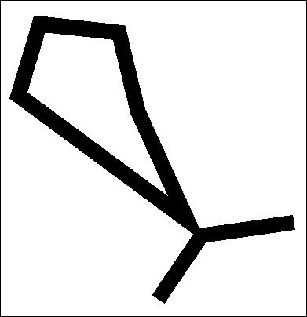
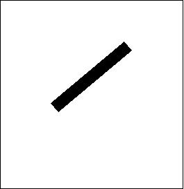
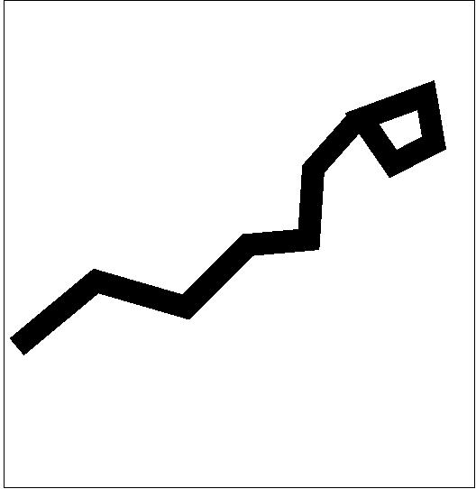
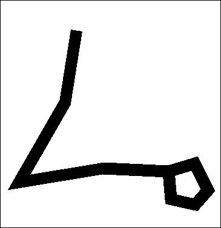
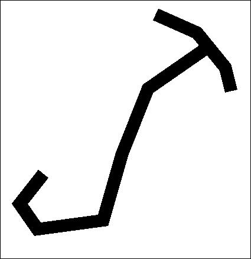

- Andromeda
- Aquarius
- Aquila
- Aries
- Auriga
-  Bootes
- Camelopardalis
- Cancer
-  Canes Venatici
- Canis Minor
- Canis Major
- Capricornus
- Cassiopeia
- Cepheus
- Cetus
- Coma Berenices
- Corona Borealis
- Corvus
- Crater
- Cygnus
- Delphinus
- Draco
- Equuleus
- Gemini
-
 Hercules
Hercules
-  Hydra
- Lacerta
- Leo
- Leo Minor
- Lepus
- Libra
- Lynx
- Lyra
- Monoceros
- Ophiuchus
- Orion
- Pegasus
- Perseus
-  Pisces
- Puppis
- Sagitta
- Sagittarius
-  Scorpius
- Scutum
- Serpens Caput
- Serpens Cauda
- Sextans
- Taurus
- Triangulum
- Ursa Major
- Ursa Minor
- Virgo
- Vulpecula